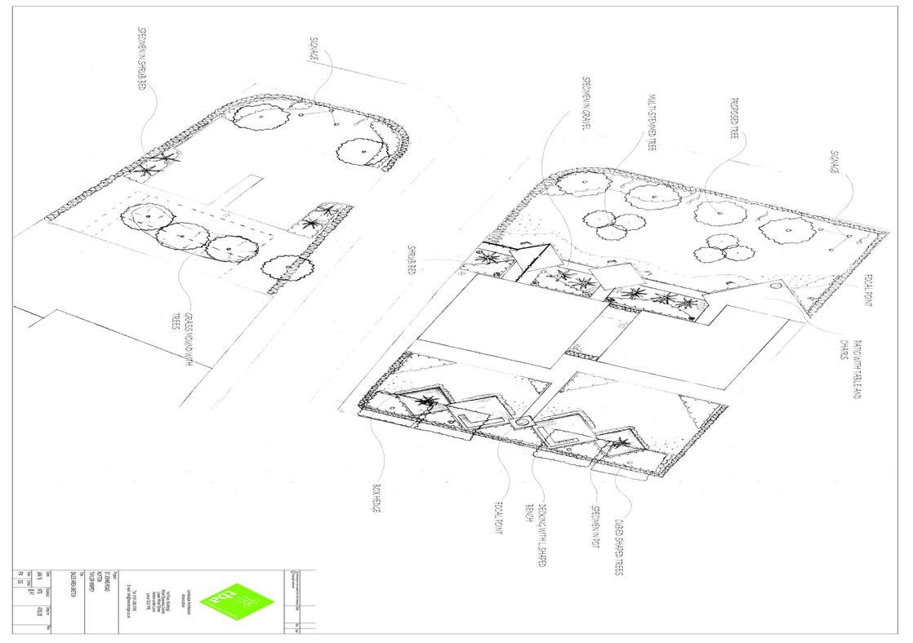
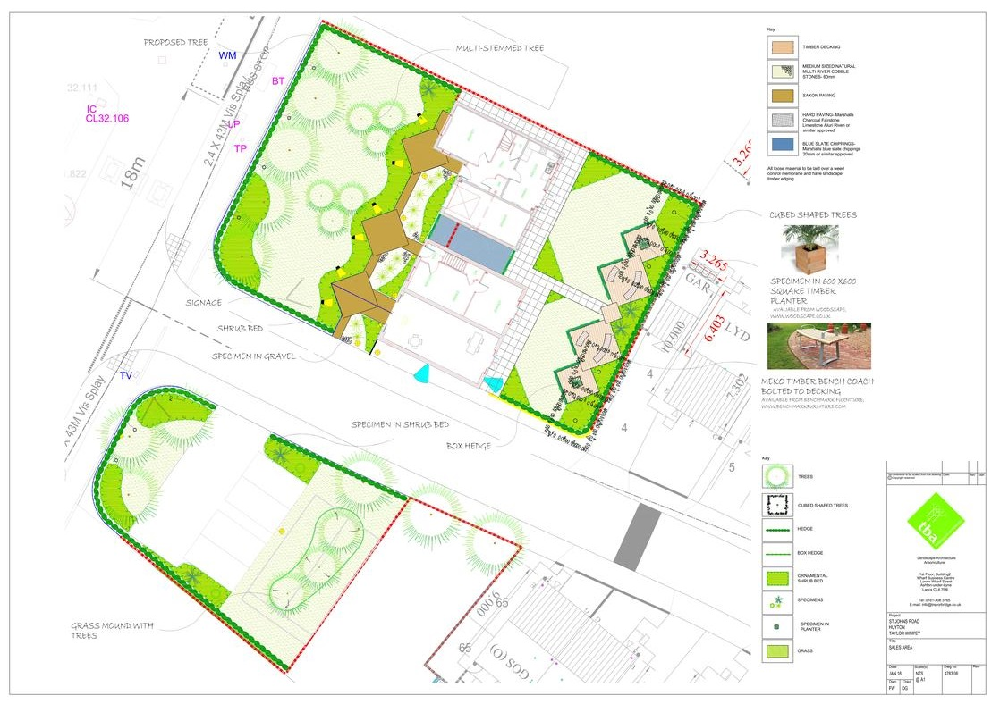
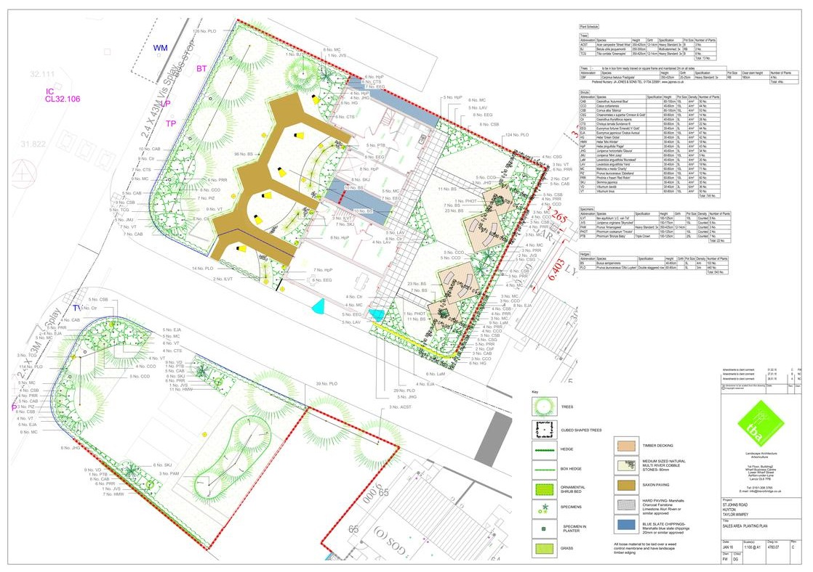

Sales Area
  My Role:
To sell a site, developers often design show homes. These images show the landscape proposals for a show home site. The process for this is usual drawing by hand, as a first draft, then after intial approval it is drawn up in CAD. We used different species and sizes of shrubs for these areas to create a bigger impact.